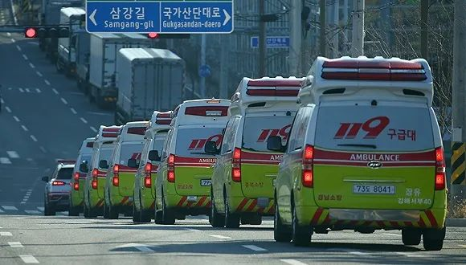
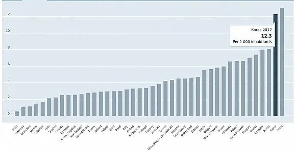

韩国累计确诊新冠肺炎超3000例，新天地总会长遭举报
原文链接 备份链接 图片来源：Kyotonews “ 韩国新天地受害者团体宣布将以违反《传染病预防法》和《特定经济犯罪加重处罚法》对新天地总会长李万熙提起指控。 ” 韩国中央防疫对策本部2月29日通报称，截至当天下午4时，韩国较当天上午9 …

图片来源：Yonhap
记者：潘金花
“
韩国也有自己的“方舱医院”。
”
由新天地教会引爆、以大邱和庆北为中心的韩国疫情“至暗时刻”似乎已告一段落。
据韩国中央防疫对策本部3月23日通报，截至当天零时，韩国较昨日零时新增64例新冠病毒感染病例，累计确诊8961例，死亡增至111例，治愈增至3166例。
新增的64例主要来自大邱（24例）、京畿道（14例）、首尔（6例）以及入境检疫（13例），是2月21日（新增74例）韩国确诊病例数井喷式增长以来的最低值，创32天来最低。
死亡病例则较前一天增加7例，累计治愈并解除隔离病例共3166例，较前一日增加257例。自3月13日以来，治愈人数已连续11天高于新增病例。
此外，确诊病例的病死率也低于全球平均水平。根据世卫组织3月3日的估算，全球新冠肺炎的死亡率约为3.4%。按照23日的数据，韩国的新冠肺炎病死率为1.24%，接近全球平均水平的三分之一。

来源：韩国中央防疫对策本部
尽管仍存在零星的地区集体感染事件，但韩国的抗疫工作已取得阶段性成效。目前，在确诊病例数破千的海外国家中，只有韩国呈现出明显的放缓趋势。
几乎在同一时段爆发大范围疫情的意大利，其确诊及死亡人数仍在急剧增长，截至当地时间22日18时，意大利已累计确诊59138例病例，死亡5476例，病死率高达9.3%。
除确诊患者年龄相对更年轻以外，韩国的低病死率主要得益于采取早期诊断、迅速开展隔离和诊治，将扩散降到了最低。
从2月4日首款检测试剂盒获批至今，韩国累计已给31.5万人进行了病毒检测，相当于每160人中，就有1人接受了检测，日检测能力达2万人。与此同时，韩国针对确诊患者也采取了密切的隔离追踪措施，及时锁定相关接触者，并在地图等应用程序上更新了确诊患者的行动轨迹，供民众自查。
世卫组织总干事谭德塞18日也提及，韩国在面临社区传播加速时，并没有“投降”，数周以来，日新增确诊病例一直在下降，从高峰时期的超900例，逐步降至两位数水平。
除了采取早期诊断和隔离措施以外，“分级诊疗”策略也在韩国抗疫过程中发挥了很大作用。与中国情形一样，在疫情爆发之初，韩国曾将所有感染者和隔离者都接到医院治疗，但随着确诊与疑似病例激增，医疗资源很快告急，疫情“重灾区”大邱等地随即出现了“一床难求”的局面。
统计数据显示，截至去年12月，韩国的负压病房床位仅为1027张，除首尔（383张）和京畿道（143张）以外，釜山、庆尚南道、大邱、仁川等地的床位均不到100张。
即使是截至2月22日的数据，韩国公共与民营医院一共也仅拥有1077张负压病房床位。当时，除首尔外，大部分地区可使用的负压床位已不足30张。
“负压病房”指的是病房内气压低于病房外气压的病房，可以预防病房内被患者污染过的空气泄漏出去，适用于隔离治疗新冠肺炎等呼吸道传染性疾病患者。
在2015年中东呼吸综合征（MERS）疫情爆发时，韩国政府所指定的医疗机构负压病房共有100多张床位，是如今的十分之一。然而面对来势汹汹的新冠疫情，1000多张负压病床显然仍不足以容纳成千上万名确诊与疑似病例。
普通隔离病房床位同样缺乏。根据经济合作与发展组织（OECD）的统计，韩国在每千人病床数方面其实处于领先位置。2017年，韩国每千人病床数为12.3张，仅次于日本的13.1张，是德国的1.5倍，法国的2倍，意大利和美国（数据为2016年）的4倍。
根据国家卫健委去年5月发布的卫生健康事业发展统计公报，中国每千人口医疗卫生机构床位数2017年为5.72张，2018年为6.03张。

来源：OECD
但随着韩国接受检测的人数突破十万，在疫情“重灾区”大邱和庆北，医疗机构的病床已经无力接收疑似病例，就连确诊患者也“一床难求”。
“至暗时刻”出现在3月初。由于严重缺乏负压及普通隔离病房床位，大邱确诊患者三人中，就有两人被迫居家隔离，虽然政府也在筹措床位，但当时，新增确诊病例已是新增床位的三倍之多。
此前，因床位不足、在等待入院期间去世的病例已开始陆续出现。2月25日至28日，大邱已至少有三人在居家隔离期间突发呼吸困难，在送院后不治身亡。
为缓解“病床荒”，韩国政府随后调整了收治策略，改为“分级诊疗”。根据中央灾难安全对策本部1日发布的新版治疗管理方案，患者将根据病情轻重，被分为轻症、中症、重症、最重症患者，中症以上患者将被迅速安排在负压病房或是国家定点医院接受治疗，轻症患者则以一人一间的方式入住设于公营设施等地的“生活治疗中心”。
这一治疗管理方案主要基于新冠肺炎疫情的特点，即80%至85%的患者都是轻症。根据中国疾控中心2月17日发布的新冠肺炎流行病学特征分析，大多数新冠肺炎患者表现为轻症，轻、中症病例达到80.9%，13.8%为重症，病死率较高的危重病例则占5%。
在这样的条件下，韩国决定不安排所有患者住院治疗，而是集中治疗有生命危险的重症患者。轻症者入住的“生活治疗中心”也配有医疗人员，这些中心由地方政府各自指定，周边医疗机构提供医疗支援。根据医疗人员的判断，轻症患者可随时转入医院接受治疗，中症以上患者若好转出院，也可转入治疗中心或是居家疗养。
据了解，这些中心多数是由现有设施改建的，比如研修院、国营和民营企业的员工宿舍等。三星生命保险、LG Display等企业均提供了一些设施，政府会承担这些设施除租金以外的人力和水电支出。
这种分级诊疗的“双轨”措施很快取得了成效。据《华尔街日报》22日报道，截至3月8日，大邱仍有超过2200名确诊患者在等待床位，占确诊病例总数的约40%，两周后，这一数字已降至124人，而且均为轻症或无症状患者。
韩国的“分级诊疗”策略其实与中国“应收尽收、应治尽治”的思路一致。在疫情爆发初期，武汉也曾出现“一床难求”的情况，在火神山、雷神山医院建成后，床位依然吃紧，直至多座“方舱医院”投入使用，局面才得以缓解。
武汉所有方舱医院如今均已休舱。据新华社报道，武汉共建成14家方舱医院，实际开放床位1.3万多张，累计收治患者1.2万余人，武汉每4名新冠肺炎患者中，就有1人在方舱医院治疗。

首尔一家医院推出的“手套墙”采样装置。来源：Boramae Medical Center
韩国所取得的阶段性进展也印证了中国经验的有效性。而在“分级诊疗”以外，韩国同时还采取了“远程医疗”、“手套墙”等新颖手段。
从原则上讲，远程医疗在韩国是被禁止的。但随着确诊病例数的急剧增长，自2月24日起，韩国保健福祉部已放宽了限制，暂时允许医疗机构提供电话咨询和用药建议。
“手套墙”则是首尔一家医院推出的采样装置，由透明的亚克力墙和医用手套组成，医生无需穿防护服就能完成采样。据韩国《亚洲经济》16日报道，这一装置现已被推广到首尔的其他医院。
与此同时，韩国也正在加紧筹备负压病房，扩充人力救治重症病例。韩国可隆集团（KOLON）11日已表示，将斥资25亿韩元（约合人民币1400万元）向位于庆北的首尔大学医院闻庆分院捐建24个床位的集装箱式负压病房。
中国的远大科技集团也与该院签订了合同，首期24个床位的负压隔离病房已在21日发货，第二期和第三期共计500个床位的病房也在紧张生产中，将在后续被送到首尔、釜山等城市。
未经授权 禁止转载

原文链接 备份链接 图片来源：Kyotonews “ 韩国新天地受害者团体宣布将以违反《传染病预防法》和《特定经济犯罪加重处罚法》对新天地总会长李万熙提起指控。 ” 韩国中央防疫对策本部2月29日通报称，截至当天下午4时，韩国较当天上午9 …
原文链接 备份链接 图片来源：Yonhap “ 《东亚日报》指出，截至27日上午，加上民间医疗机构，韩国总共仅有1077张负压病床，已远少于确诊病例人数。 ” 韩国中央防疫对策本部2月28日通报，截至当天上午9时，韩国较昨日新增256例新 …
原文链接 备份链接 韩国1月20日发现首例确诊病例，此后一个月疫情发展缓慢，到2月18日确诊31例。2月19日后突然暴增，一周新增超过1200例。 18日确诊的第31号患者，被视为“超级传播者”。 韩国新冠疫情的一大特征是，在特定群 …
原文链接 备份链接 图片来源：Yonhap 记者：潘金花 “ 曾是韩国新冠肺炎疫情最大火焰的大邱庆北地区“新天地”集体感染事态已接近尾声，但零星的集体感染火势仍未减弱。 ” 随着对新天地大邱教会信徒的检测工作进入收尾阶段，韩国的单日新增确 …
原文链接 备份链接 3月4日，大韩航空一架飞机正在消毒。图片来源：Yonhap “ 这将是韩国首次从特定国家、而不仅是国外个别地区撤侨。目前居留在伊朗的韩国公民共220人，预计约有100人将乘包机回国。 ” 韩国中央防疫对策本部3月8日通 …